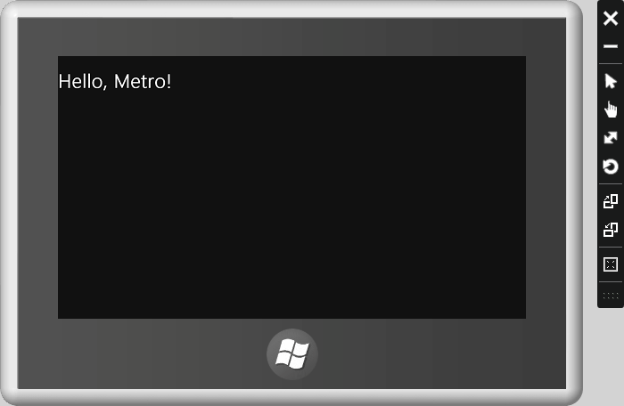
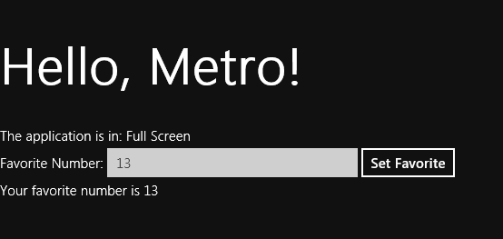

Overview
In this lab, we'll build our first Windows 8 Metro application.
We'll see how Window 8 apps can use standard HTML 5 markup,
standard JavaScript code, and standard CSS.
You'll be working in the before directory of this lab. A completed
version of the application exists in the after folder.
Create the Application
- Open Visual Studio 2011.
- From the File -> New Project menu, create a blank
Metro (JavaScript) application. Name the project Hello
and place it in the before directory of this lab.
-
Inside the <body> element, place an h1 tag with
"Hello, Metro!" inside.
-
Run the application in the simulator (right-click on the
project, go to Properties, and select "Simulator" under the
"Debugger to Launch" option.
-
Once you've verified the application is working, select
"Stop Debugging" in Visual Studio (this will leave the simulator
ready for the next debugging attempt).

Using CSS Media Queries
- Add the following content to your metro application,
after the h1 tag.
<div id="full">The application is in: Full Screen</div>
<div id="fill">The application is in: Fill</div>
<div id="snap">The application is in: Snapped</div>
<div id="portrait">The application is in: Device Portrait</div>
-
The goal is to have only a single div out of those 4 divs display at a time.
-
Open the default.css file in the CSS folder of your application.
-
Add the following style definitions inside of the media query
for a full screen application.
#full { display:block; }
#fill { display:none; }
#snap { display:none; }
#portrait { display:none; }
-
Continue adding style rules to the media query sections
controlling fill, snap, and portrait modes to ensure only
a single div display the correct text is showing at any one time.
-
Run your application in the simulator to test it out.
Scripting the DOM
- Enter the following markup which will allow a user to enter
thier favorite number. Once entered, we can display the favorite
number.
<label for="favorite">Favorite Number:</label>
<input type="number" name="favorite" />
<button id="setFavorite">Set Favorite</button>
<div id="output">
-
Inside of js/default.js, find the TODO comment showing where to
add startup code.
-
Replace the TODO comment with code that will:
- Wire up a click event on the setFavorite button
- When clicked, get the favorite number value
- Display the favorite number im the output div ("Your favorite number is 42").
- Run the application and test your new feature.

Working with Application State Events
- If you are still working with the simulator, change the project
properties to run your Hello app on the desktop.
-
Launch the application without debugging from Visual Studio (Ctrl+F5).
- Enter your favorite number, and click the set button
- Switch applications (you probably already have) using Alt+Tab
- Open the Windows Task Manager and wait for your App to suspend
- Right-click the app in task manager and end the process
- Relaunch the application in Visual Studio without debugging
- Notice the application forgot your number
- Close the application, and let's look at checkpoint events
- Wire up a checkpoint event listener for your application
- During the checkpoint, save the favorite number to session state
- During activation, reload the input with the number from session state
- Test your logic by launching, suspending, and terminating the app.
If you need to debug the checkpoint process, note there is a "trigger suspend"
item on the Debug menu.
-
If you get stuck,the code you need might look something like the following.
(function () {
'use strict';
function onActivated() {
setFavoriteNumber(WinJS.Application.sessionState.favoriteNumber);
var setFavorite = document.getElementById("setFavorite");
setFavorite.addEventListener("click", function () {
var number = getFavoriteNumber();
var output = document.getElementById("output");
output.textContent = "Your favorite number is " + number;
});
}
function getFavoriteNumber() {
return document.querySelector("[name='favorite']").value;
}
function setFavoriteNumber(number) {
document.querySelector("[name='favorite']").value = number;
}
function onCheckpoint() {
WinJS.Application.sessionState.favoriteNumber
= getFavoriteNumber();
}
WinJS.Application.addEventListener("activated", onActivated);
WinJS.Application.addEventListener("checkpoint", onCheckpoint);
WinJS.Application.start();
})();
Conclusion
Congratulations! You've built your first Metro app!